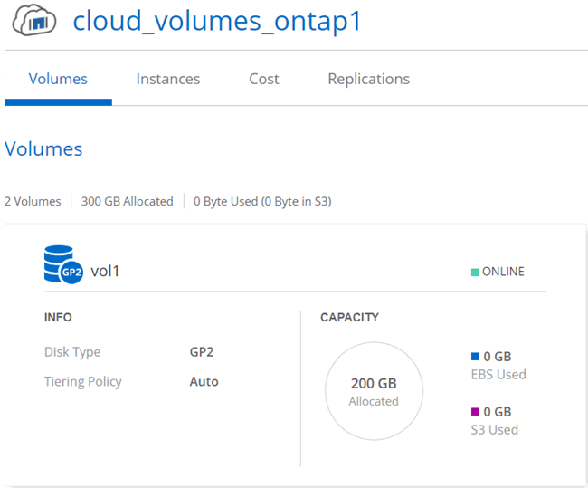
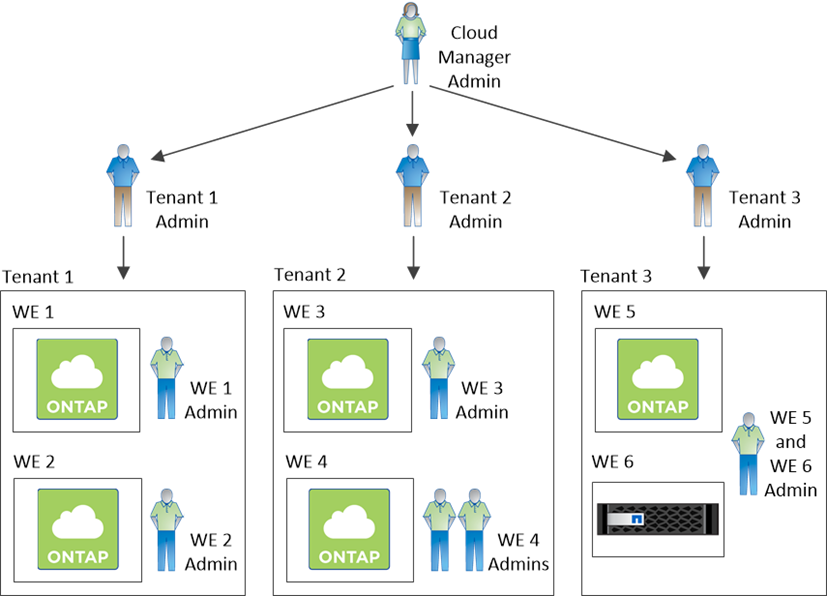
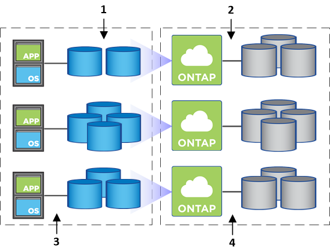
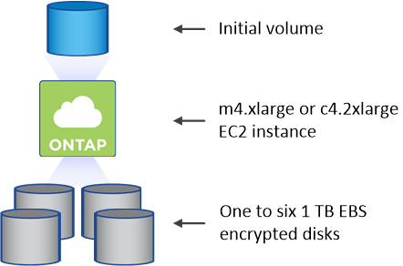

Go to the docs for the latest release.
Storage management
Contributors
 Download PDF of this page
Download PDF of this page
Cloud Manager provides simplified and advanced management of Cloud Volumes ONTAP storage.
| All disks and aggregates must be created and deleted directly from Cloud Manager. You should not perform these actions from another management tool. Doing so can impact system stability, hamper the ability to add disks in the future, and potentially generate redundant cloud provider fees. |
Storage provisioning
Cloud Manager makes storage provisioning for Cloud Volumes ONTAP easy by purchasing disks and managing aggregates for you. You simply need to create volumes. You can use an advanced allocation option to provision aggregates yourself, if desired.
Simplified provisioning
Aggregates provide cloud storage to volumes. Cloud Manager creates aggregates for you when you launch an instance, and when you provision additional volumes.
When you create a volume, Cloud Manager does one of three things:
-
It places the volume on an existing aggregate that has sufficient free space.
-
It places the volume on an existing aggregate by purchasing more disks for that aggregate.
-
It purchases disks for a new aggregate and places the volume on that aggregate.
Cloud Manager determines where to place a new volume by looking at several factors: an aggregate’s maximum size, whether thin provisioning is enabled, and free space thresholds for aggregates.
| The Cloud Manager Admin can modify free space thresholds from the Settings page. |
Disk size selection for aggregates in AWS
When Cloud Manager creates new aggregates for Cloud Volumes ONTAP in AWS, it gradually increases the disk size in an aggregate, as the number of aggregates in the system increases. Cloud Manager does this to ensure that you can utilize the system’s maximum capacity before it reaches the maximum number of data disks allowed by AWS.
For example, Cloud Manager might choose the following disk sizes for aggregates in a Cloud Volumes ONTAP Premium or BYOL system:
| Aggregate number | Disk size | Max aggregate capacity |
|---|---|---|
1 |
500 MB |
3 TB |
4 |
1 TB |
6 TB |
6 |
2 TB |
12 TB |
You can choose the disk size yourself by using the advanced allocation option.
Advanced allocation
Rather than let Cloud Manager manage aggregates for you, you can do it yourself. From the Advanced allocation page, you can create new aggregates that include a specific number of disks, add disks to an existing aggregate, and create volumes in specific aggregates.
Capacity management
The Cloud Manager Admin can choose whether Cloud Manager notifies you of storage capacity decisions or whether Cloud Manager automatically manages capacity requirements for you. It might help for you to understand how these modes work.
Automatic capacity management
If the Cloud Manager Admin set the Capacity Management Mode to automatic, Cloud Manager automatically purchases new disks for Cloud Volumes ONTAP instances when more capacity is needed, deletes unused collections of disks (aggregates), and moves volumes between aggregates, as needed.
The following examples illustrate how this mode works:
-
If an aggregate with 5 or fewer EBS disks reaches the capacity threshold, Cloud Manager automatically purchases new disks for that aggregate so volumes can continue to grow.
-
If an aggregate with 12 Azure disks reaches the capacity threshold, Cloud Manager automatically moves a volume from that aggregate to an aggregate with available capacity or to a new aggregate.
Note that free space is now available on the original aggregate. Existing volumes or new volumes can use that space. The space cannot be returned to AWS or Azure in this scenario.
-
If an aggregate contains no volumes for more than 12 hours, Cloud Manager deletes it.
Manual capacity management
If the Cloud Manager Admin set the Capacity Management Mode to manual, Cloud Manager displays Action Required messages when capacity decisions must be made. The same examples described in the automatic mode apply to the manual mode, but it is up to you to accept the actions.
Storage isolation using tenants
Cloud Manager enables you to provision and manage storage in isolated groups called tenants. You need to decide how to organize Cloud Manager users and their working environments across tenants.
Working environments
Cloud Manager represents storage systems as working environments. A working environment is any of the following:
-
A single Cloud Volumes ONTAP system or an HA pair
-
An on-premises ONTAP cluster in your network
-
An ONTAP cluster in a NetApp Private Storage configuration
The following image shows a Cloud Volumes ONTAP working environment:

Tenants
A tenant isolates working environments in groups. You create one or more working environments within a tenant. The following image shows three tenants defined in Cloud Manager:

User management of tenants and working environments
The tenants and working environments that Cloud Manager users can manage depend on user role and assignments. The three distinct user roles are as follows:
- Cloud Manager Admin
-
Administers the product and can access all tenants and working environments.
- Tenant Admin
-
Administers a single tenant. Can create and manage all working environments and users in the tenant.
- Working Environment Admin
-
Can create and manage one or more working environments in a tenant.
Example of how you can create tenants and users
If your organization has departments that operate independently, it is best to have a tenant for each department.
For example, you might create three tenants for three separate departments. You would then create a Tenant Admin for each tenant. Within each tenant would be one or more Working Environment Admins who manage working environments. The following image depicts this scenario:

Why you should link a tenant to your NetApp Support Site account
Cloud Manager prompts you to enter NetApp Support Site credentials for a tenant because it uses the credentials to manage licenses for Cloud Volumes ONTAP BYOL systems, to register pay-as-you-go instances for support, and to upgrade Cloud Volumes ONTAP software.
Watch the following video for more information about providing Cloud Manager with your NetApp Support Site credentials.
For step-by-step instructions and requirements for NetApp Support Site accounts, refer to Linking tenants to a NetApp Support Site account.
For more information about how Cloud Manager manages license files, refer to Licensing.
Simplified storage management using the Volume View
Cloud Manager provides a separate management view called the Volume View, which further simplifies storage management in AWS.
The Volume View enables you to simply specify the NFS volumes that you need in AWS and then Cloud Manager handles the rest: it deploys Cloud Volumes ONTAP systems as needed and it makes capacity allocation decisions as volumes grow. This view gives you the benefits of enterprise-class storage in the cloud with very little storage management.
The following image shows how you interact with Cloud Manager in the Volume View:

-
You create NFS volumes.
-
Cloud Manager launches Cloud Volumes ONTAP instances in AWS for new volumes or it creates volumes on existing instances. It also purchases physical EBS storage for the volumes.
-
You make the volumes available to your hosts and applications.
-
Cloud Manager makes capacity allocation decisions as your volumes grow.
This means that you simply need to interact with volumes (the image on the left), while Cloud Manager interacts with the storage system and its underlying storage (the image on the right).
Allocation of cloud resources for the initial volume
When you create your first volume, Cloud Manager launches a Cloud Volumes ONTAP instance or a Cloud Volumes ONTAP HA pair in AWS and purchases Amazon EBS storage for the volume:

The size of the initial volume determines the EC2 instance type and the number of EBS disks.
| Cloud Manager launches a Cloud Volumes ONTAP Explore or Standard instance, depending on the initial volume size. As the volumes grow, Cloud Manager might prompt you to make an AWS instance change which means it needs to upgrade the instance’s license to Standard or Premium. Upgrading increases the EBS raw capacity limit, which allows your volumes to grow. |
| Cloud Manager does not launch Cloud Volumes ONTAP BYOL instances in the Volume View. You should use Cloud Manager in the Storage System View if you purchased a Cloud Volumes ONTAP license. |
Allocation of cloud resources for additional volumes
When you create additional volumes, Cloud Manager creates the volumes on existing Cloud Volumes ONTAP instances or on new Cloud Volumes ONTAP instances. Cloud Manager can create a volume on an existing instance if the instance’s AWS location and disk type match the requested volume, and if there is enough space.
NetApp storage efficiency features and storage costs
Cloud Manager automatically enables NetApp storage efficiency features on all volumes. These efficiencies can reduce the total amount of storage that you need. You might see a difference between your allocated capacity and the purchased AWS capacity, which can result in storage cost savings.
Capacity allocation decisions that Cloud Manager automatically handles
-
Cloud Manager purchases additional EBS disks as capacity thresholds are exceeded. This happens as your volumes grow.
-
Cloud Manager deletes unused sets of EBS disks if the disks contain no volumes for 12 hours.
-
Cloud Manager moves volumes between sets of disks to avoid capacity issues.
In some cases, this requires purchasing additional EBS disks. It also frees space on the original set of disks for new and existing volumes.
 Edit on GitHub
Edit on GitHub